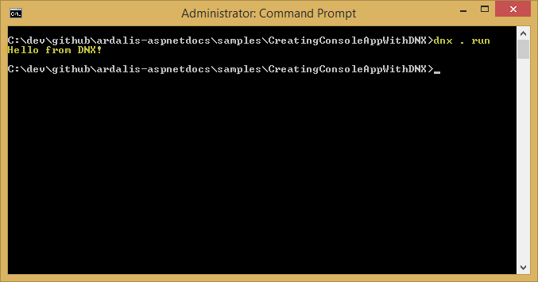
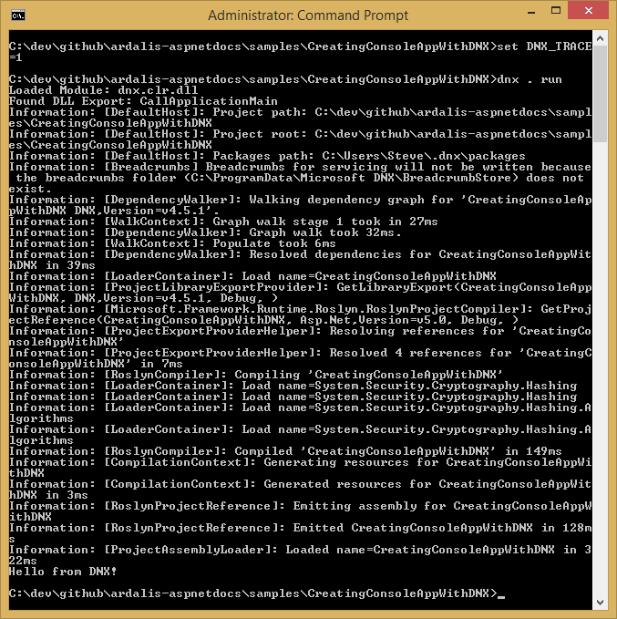

Creating a Cross-Platform Console App with DNX
By Steve Smith
Using the .NET Execution environment (DNX), it's very easy to run a simple console application.
In this article:
- Creating a Console App
- Specifying Project Settings
- Running the App
You can view and download the source from the project created in this article.
Creating a Console App
Before you begin, make sure you have successfully installed DNX on your system:
Open a console or terminal window in an empty working folder, where
dnx is configured.
Creating a console application is extremely straightforward. For this article, we're going to use the following C# class, which has just one line of executable code:
It really doesn't get any simpler than this. Create a file with these
contents and save it as Program.cs in your current folder.
Specifying Project Settings
Next, we need to provide the project settings DNX will use. Create a new
project.json file in the same folder, and edit it to match the listing
shown here:
Save your changes.
Running the App
At this point, we're ready to run the app. You can do this by simply
entering dnx . run from the command prompt. You should see a result
like this one:

note
dnxreferences several environment variables, such asDNX_TRACE, that affect its behavior.
Set the DNX_TRACE environment variable to 1, and run the application
again. You should see a great deal more output:

In this example, running on the Windows platform, the default behavior
for DNX is to run on the full .NET Framework. You can switch to use the
CoreCLR by running dnvm upgrade -r CoreCLR. To return to using .NET
CLR, run dnvm upgrade -r CLR.
You can see the app continues to run after switching to use CoreCLR:

Summary
Creating and running your first console application on DNX is very simple, and only requires two files.